🤖
Android
APK · ফোন ও ট্যাব
Download APKHow to install · কীভাবে ইনস্টল
- Open the downloaded Jhuli.apk.
- If Android asks, allow “Install unknown apps” for your browser.
- ডাউনলোড হওয়া ফাইলটি খুলে Install চাপুন।
Free · No ads · Works offline
প্রতিদিনের সব কাজের জন্য একটাই অ্যাপ — ঝুলি।
Screenshots and screen recording, text from pictures, a focus timer, file sharing over Wi-Fi, a video editor and 130+ tools for money, health, study, home and work — on your phone, your computer and the web.
Choose your device below · নিচে আপনার ডিভাইস বেছে নিন
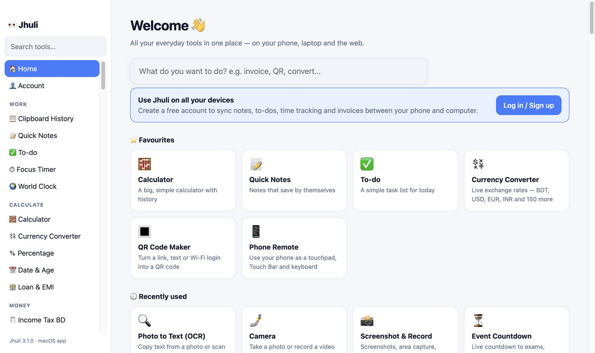
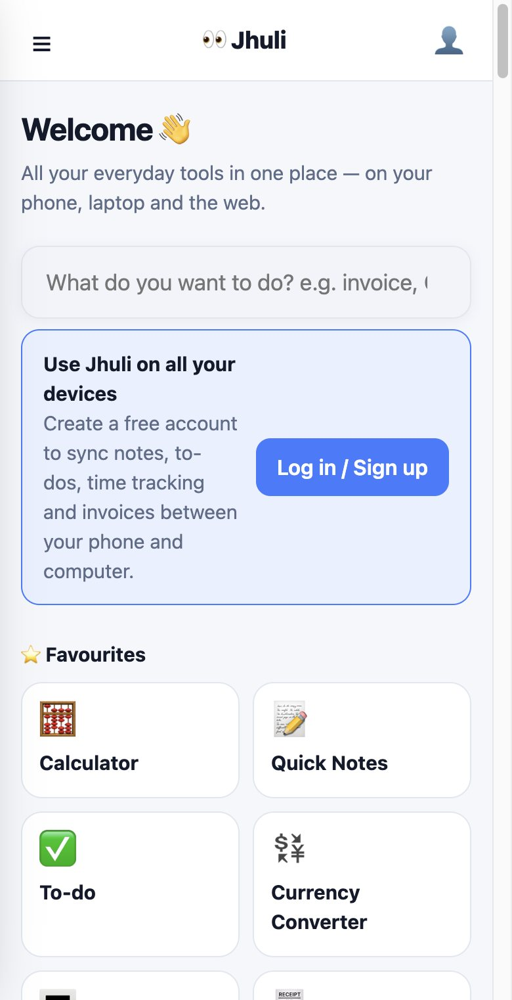
One app, every device. Your device is shown first. · আপনার ডিভাইসের বোতাম সবার আগে।
APK · ফোন ও ট্যাব
Download APKWeb app · ওয়েব অ্যাপ
Open JhuliWindows 10 / 11 · 64-bit
Download installer Portable (no install)If Windows says “Windows protected your PC”, click More info → Run anyway. · “More info” → “Run anyway” চাপুন।
Apple silicon & Intel
Download for MacAppImage · Ubuntu / Debian .deb
Download AppImage .deb packageMake the AppImage executable (chmod +x) and open it, or sudo apt install ./jhuli_amd64.deb.
Chromebook, tablet, any computer
Open the web appInstall it from the browser menu (⋮ → Install) to use it like an app.
Always the newest version from GitHub Releases.
Jhuli replaces a dozen separate apps. · এক অ্যাপেই ডজনখানেক অ্যাপের কাজ।
Area or full screen, screen recording with sound, sound-only recording. স্ক্রিনশট ও রেকর্ডিং
Drag over any text on the screen or open a photo — Bangla and English, copied for you. ছবি থেকে লেখা
Arrows, boxes, highlight, numbered steps and blur for private details. ছবিতে দাগ ও লেখা
Pomodoro cycles with breaks; the countdown sits in the menu bar. মনোযোগ টাইমার
Your current task always visible in the menu bar, so you don't forget. এখনকার কাজ
Everything you copied, searchable and pinnable, plus saved texts you paste often. কপি ইতিহাস
Phone ⇄ computer with a QR code. No cable, no upload. ওয়াই-ফাইতে ফাইল পাঠান
Trim and join clips, add a caption, mute or add music, save as MP4. ভিডিও এডিট
Level meter, mic choice, volume boost and noise reduction. পরিষ্কার শব্দ রেকর্ড
A beautiful free photo on your desktop every day. প্রতিদিন নতুন ওয়ালপেপার
Pick colours, make QR codes, merge, split and compress PDFs, convert images. রং, কিউআর, পিডিএফ
Use your phone as a touchpad and keyboard; an on-screen Touch Bar for any computer. ফোন দিয়ে কম্পিউটার চালান
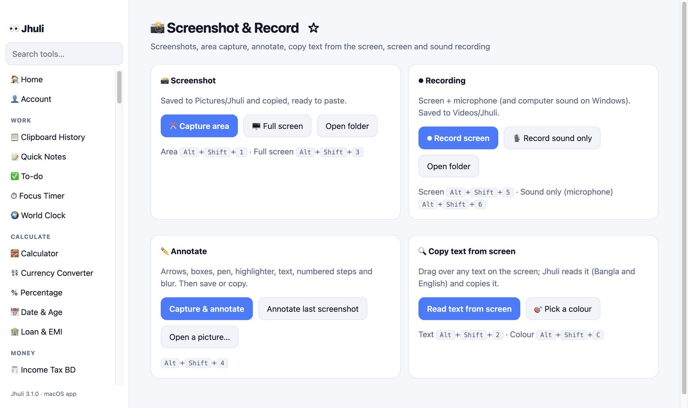
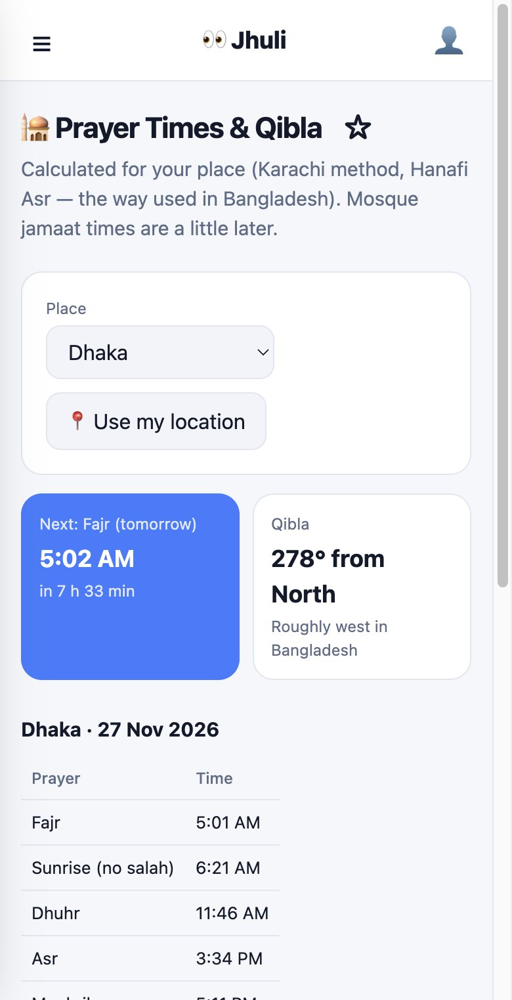
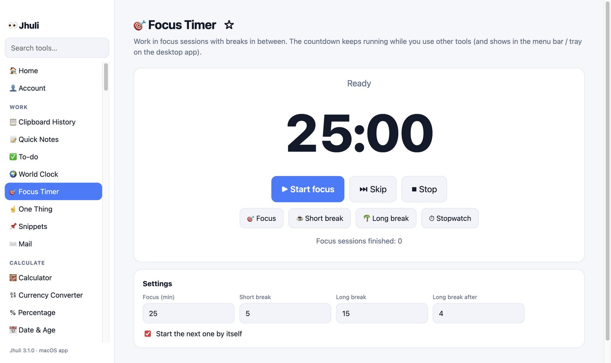
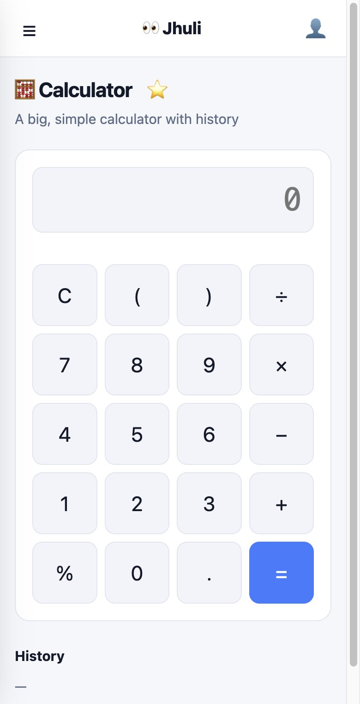
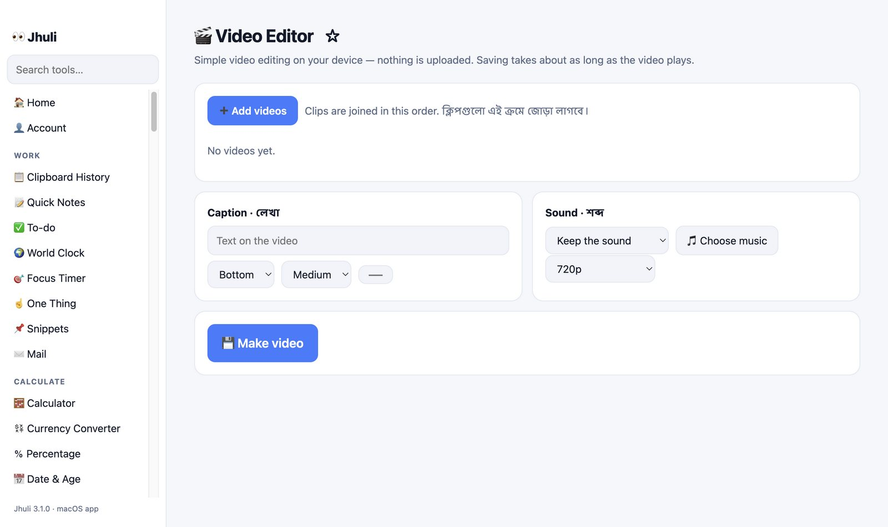
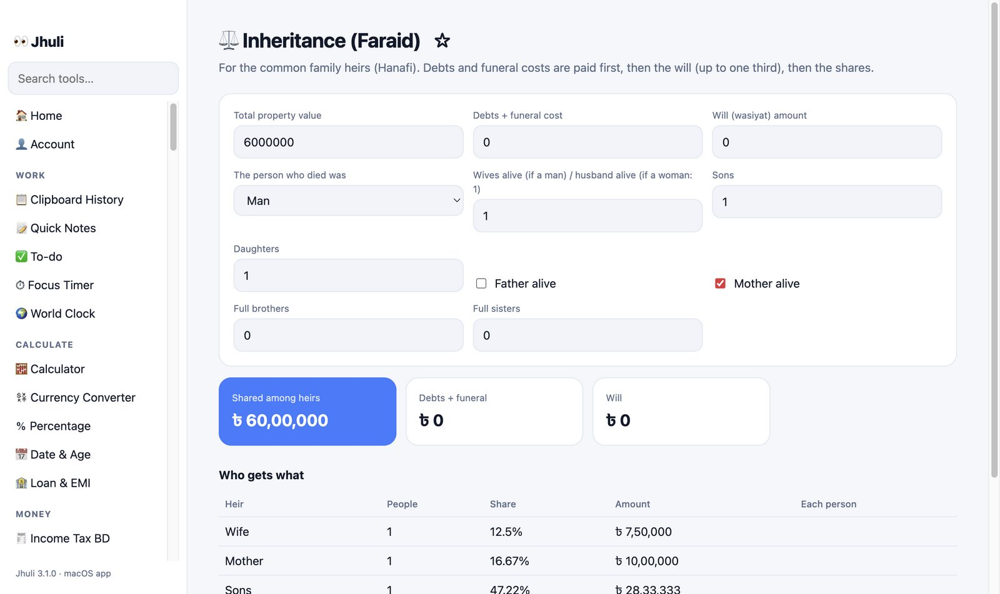
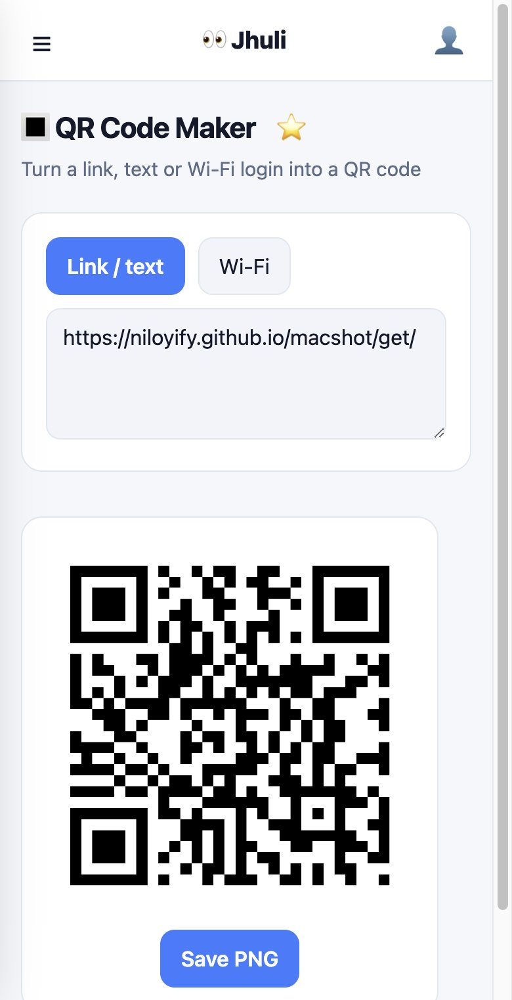
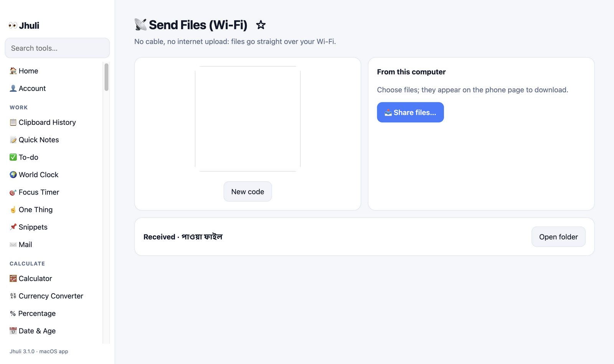
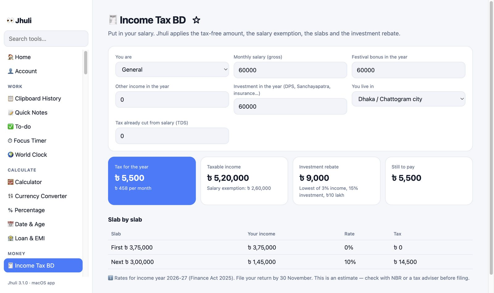
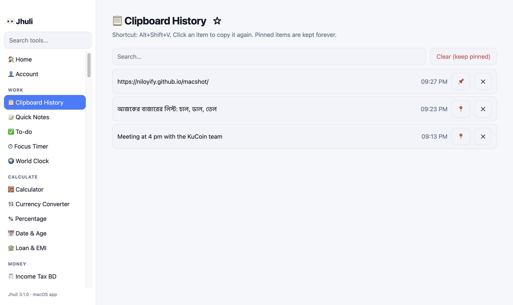
Yes. No ads, no account needed. · হ্যাঁ, পুরোপুরি ফ্রি, কোনো বিজ্ঞাপন নেই।
Your tools and files stay on your device. Nothing is uploaded unless a tool clearly says so (for example live currency rates). · আপনার তথ্য আপনার ডিভাইসেই থাকে।
Yes, almost every tool works offline. Reading text from pictures downloads its language data once. · প্রায় সব টুল অফলাইনে চলে।
On iPhone and iPad, Jhuli is a web app: open it in Safari and add it to the Home Screen. It works like a normal app. · Safari-তে খুলে হোম স্ক্রিনে যোগ করুন।